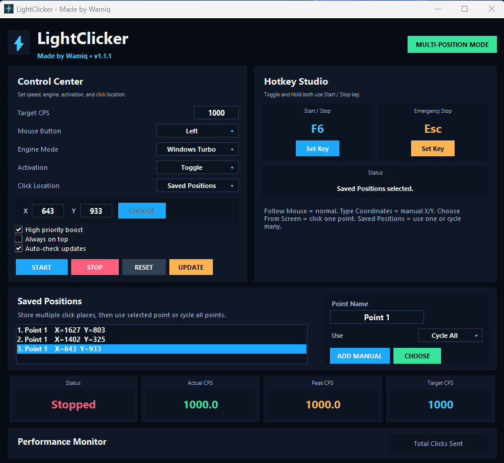

⚡Available
LightClicker
Clean Windows autoclicker with Windows Turbo mode, Toggle/Hold mode, follow mouse mode, fixed X/Y coordinates, screen picker, update checker, and up to 1000 CPS.
Download nowClean Windows utilities
PC Tools by Wamiq is a growing collection of lightweight desktop utilities for automation, speed, testing, and productivity. LightClicker is the first official tool and more tools can be added here later.

LightClicker is available now. The website is already set up like a full software brand so future tools can be added later under the same official home.
Clean Windows autoclicker with Windows Turbo mode, Toggle/Hold mode, follow mouse mode, fixed X/Y coordinates, screen picker, update checker, and up to 1000 CPS.
Download nowLocal CPS testing utility for checking click performance without website limits or browser crashes.
Planned toolA lightweight Windows timing utility planned for performance tuning and response testing workflows.
Planned toolA future macro utility for safe personal automation, shortcuts, and productivity tasks.
Planned toolLightClicker is a compact Windows autoclicker designed for practical use, clean controls, and honest performance. It includes Windows Turbo mode, Precision mode, Low CPU mode, Toggle/Hold activation, custom hotkeys, multi-position clicking, Emergency Stop, and update checking.
CPS maximum target
LightClicker schedules click attempts. Actual accepted clicks can still depend on Windows, hardware, permissions, and the target app.The homepage uses the updated LightClicker screenshot so visitors can see the actual app UI before downloading.
Recommended download is the official installer. A portable version can also be offered if you want users to run the app directly without installation.
Version 1.1.1 • Windows • PC Tools by Wamiq
PC Tools by Wamiq is intended for productivity, testing, accessibility, and personal automation where automation is allowed. Do not use these tools for cheating, spam, abuse, bypassing protections, or violating the rules of games, websites, apps, or services.